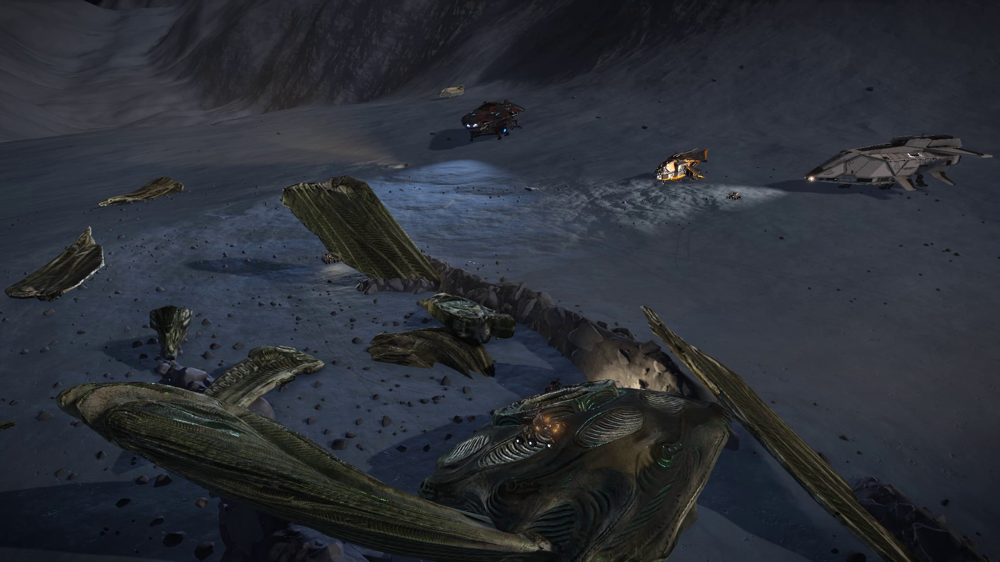

The people of the Canonn Confirmation Crew, and their ships:
Jack Corban: Python “Iron Cockroach”
Igamer: Asp Explorer
Alyx Wander: Diamondback Explorer
Edbop: Asp Explorer
Igor2010: Anaconda
08/30/3302
Pleiades Sector AB-W b2-4, Moon 9 A
We’ve found it.
CMDR’s Log:
I am happy to confirm that I am the 5th person to have seen the strange alien vessel while acting as navigator and lead for the Canonn Confirmation party following CMDR Noctrach and Ihazevich’s scouting party.
A group of 5, thus known as the Confirmation Party, made up of me, CMDR Igamer17, Igor2010, Edbop and Jack Corban were sent to this system after the first Canonn Scouting party of CMDRs Noctrach and Ihazevich confirmed this system as the system that the hunt was leading to.
I was lucky enough to have been on the way to the Hind nebula, so I was only 6 humps away from what was confirmed as a candidate system. My luck was further brought up once more CMDRs confirmed they were close and had the scanners necessary to find the planet.
CMDR Igamer and I started the wing, him volunteering to scan the system with his ADS due to the system being too large for other Discovery Scanners to scan. Shortly after, Jack Corban joined the wing, and then followed by Igor, then Edbop, and we made our way to Moon 9 A.
I was to act as navigator for the Confirmation Party once we were out of orbital cruise, following close behind the Scouting Party and headed towards the false co-ordinates of (-26, 34).
Navigation was slow as we made our way to the false co-ordinates because of a inaccurate entry onto the planet. It was during the final stretch that the Scouting Party found the alien ship at the co-ordinates (-26.3772 97.6982) in a canyon, crashed.
Once we received the co-ordinates, the Confirmation Party low-waked into orbit to get there as fast as possible. Some disengaged closer to the co-ordinates than others.
I saw two ships when I made it to the artifact, one belonging to Igamer and one belonging to Jack Corban. We then confirmed that I was the 5th CMDR to have seen the ship behind the two of the Confirmation Party and the Scouting Party. This had also meant that I had successfully filled out my role as navigator.
Tests with the UAs and UPs have already started, and so I leave this log now to rest, after not sleeping for several days, if not weeks. Tests will be done before and out of sight of CMDR Harry Potter and his Smiling Dog Crew, of course. Canonn now has a lot to do…
<End.>
Am now leaving to investigate a lead at 39 Delta Persei.

Edit Date 11/2/3303:
So this is what the writing of a new initiate to Canonn looks like. Over-eager, overworked without sleeping for days, and looking like the work of a complete newb…
I’ll leave it be.
It’s a part of my history now.